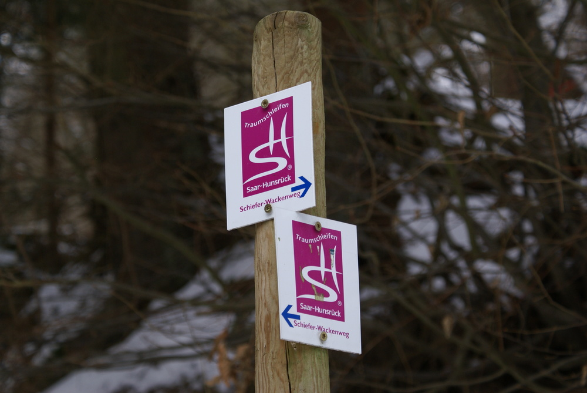

Besucherbergwerk Fell
Auf den Schiefergruben
D-54341 Fell
An der Bachbrücke beginnt rechts die Traumschleife
Alternativ:
Parkplatz Bürgerhaus in Thomm
(Für Navigation: Römerstraße, 54317 Thomm) von dort
200 m Zuwegung bis Ortsmitte (Kirche) zum Schiefer- und Wackenweg
Close